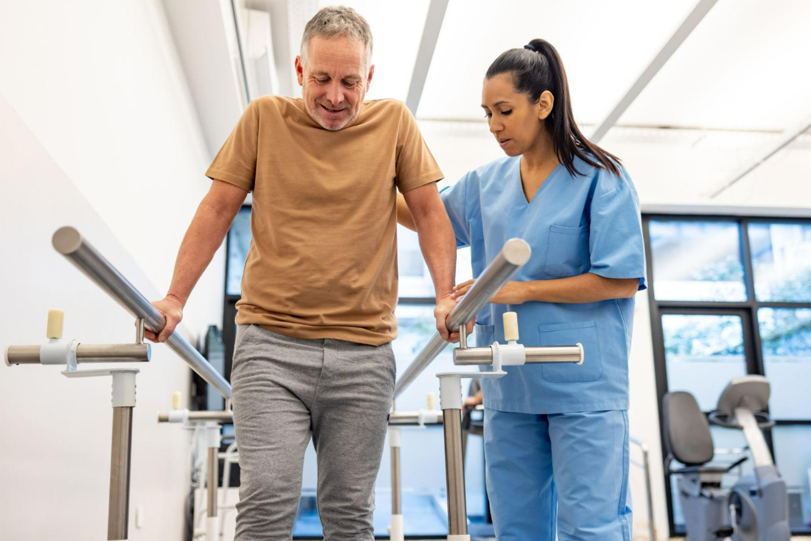

01Physical Rehabilitation
A person-centered approach to improving movement, physical function, and overall well-being through rehabilitation activities.
Program Focus
- Functional movement and mobility
- Physical rehabilitation activities
- Strength, balance, and coordination
- Individual rehabilitation goals